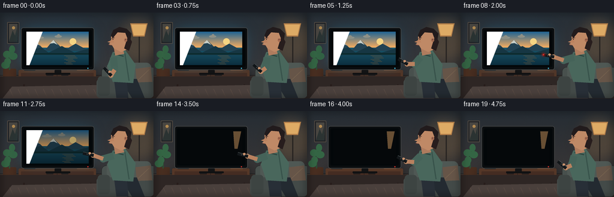
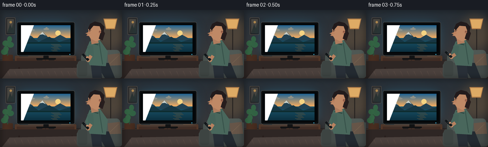

CODING AGENTS AS PIXEL WORLD MODELS
traex/GPT-5.6-Sol · motion_rationality_0045
点击播放 · 原生 RGB 像素
逐轮保存的候选
回放视频、检查图与代码变化。
每份候选均可单独播放。实际图片检查记录在下方工具轨迹中。
候选 01播放与检查图
点击播放 · 原生 RGB 像素


展开代码变化
--- 上一保存版本
+++ 本次保存版本
@@ -0,0 +1,268 @@
+from pathlib import Path
+import math
+import numpy as np
+from PIL import Image, ImageDraw, ImageFilter
+import artifact_io
+
+W, H, N = 256, 144, 20
+S = 4
+rng = np.random.default_rng(45)
+
+
+def ss(v):
+ if isinstance(v, (tuple, list)):
+ return tuple(int(round(x*S)) for x in v)
+ return int(round(v*S))
+
+
+def smoothstep(x):
+ x = max(0.0, min(1.0, x))
+ return x*x*(3-2*x)
+
+
+def lerp(a,b,t): return a+(b-a)*t
+
+def mix(c1,c2,t):
+ return tuple(int(round(lerp(a,b,t))) for a,b in zip(c1,c2))
+
+
+def poly(draw, pts, fill): draw.polygon([ss(p) for p in pts], fill=fill)
+def ell(draw, box, fill, outline=None, width=1): draw.ellipse(ss(box), fill=fill, outline=outline, width=ss(width))
+def rr(draw, box, r, fill, outline=None, width=1): draw.rounded_rectangle(ss(box), radius=ss(r), fill=fill, outline=outline, width=ss(width))
+def line(draw, pts, fill, width, joint='curve'): draw.line([ss(p) for p in pts], fill=fill, width=ss(width), joint=joint)
+
+
+def glow_layer(im, box, color, blur, alpha):
+ lay = Image.new('RGBA', im.size, (0,0,0,0)); d=ImageDraw.Draw(lay)
+ d.ellipse(ss(box), fill=(*color,alpha))
+ lay=lay.filter(ImageFilter.GaussianBlur(ss(blur)))
+ im.alpha_composite(lay)
+
+
+def rotate_poly(center, length, width, angle):
+ ux,uy=math.cos(angle),math.sin(angle); vx,vy=-uy,ux
+ cx,cy=center
+ return [(cx+ux*length/2+vx*width/2,cy+uy*length/2+vy*width/2),
+ (cx+ux*length/2-vx*width/2,cy+uy*length/2-vy*width/2),
+ (cx-ux*length/2-vx*width/2,cy-uy*length/2-vy*width/2),
+ (cx-ux*length/2+vx*width/2,cy-uy*length/2+vy*width/2)]
+
+
+def television_content(frame, brightness):
+ # small painterly nature program: sunset lake, mountains, and moving clouds
+ sw,sh=104*S,56*S
+ arr=np.zeros((sh,sw,3),dtype=np.float32)
+ horizon=int(sh*.48)
+ top=np.array([31,99,147.]); bot=np.array([246,173,96.])
+ for y in range(horizon):
+ t=y/max(1,horizon-1)
+ arr[y,:,:]=top*(1-t)+bot*t
+ wt=np.array([26,87,109.]); wb=np.array([12,47,63.])
+ for y in range(horizon,sh):
+ t=(y-horizon)/max(1,sh-horizon-1)
+ arr[y,:,:]=wt*(1-t)+wb*t
+ img=Image.fromarray(np.uint8(arr),'RGB').convert('RGBA'); d=ImageDraw.Draw(img)
+ # sun, distant mountains
+ d.ellipse((72*S,11*S,83*S,22*S),fill=(255,220,136,245))
+ d.polygon([(0,32*S),(17*S,18*S),(31*S,31*S),(45*S,14*S),(63*S,31*S),(82*S,20*S),(104*S,32*S)],fill=(34,66,83,255))
+ d.polygon([(0,34*S),(24*S,26*S),(37*S,35*S),(59*S,24*S),(80*S,35*S),(104*S,28*S),(104*S,39*S),(0,39*S)],fill=(22,54,67,255))
+ # snow caps and shore
+ d.polygon([(13*S,22*S),(17*S,18*S),(22*S,23*S),(18*S,21*S)],fill=(212,224,220,230))
+ d.polygon([(39*S,20*S),(45*S,14*S),(52*S,22*S),(46*S,19*S)],fill=(224,229,220,230))
+ d.rectangle((0,36*S,104*S,38*S),fill=(12,43,44,255))
+ # cloud motion contained in screen
+ shift=(frame*1.2)%20
+ for cx,cy,rx in [(21+shift,10,8),(53+shift*.45,8,6)]:
+ d.ellipse(((cx-rx)*S,(cy-2)*S,(cx+rx)*S,(cy+2)*S),fill=(231,236,221,155))
+ d.ellipse(((cx-rx*.3)*S,(cy-4)*S,(cx+rx*.5)*S,(cy+2)*S),fill=(241,240,219,150))
+ # lake highlights and reflection
+ for k in range(8):
+ y=(40+k*2)*S; x=(63+(k%3)*3-int(frame*.3)) * S
+ d.line((x,y,x+(18-k)*S,y),fill=(234,176,101,130),width=max(1,S//2))
+ if brightness < 1:
+ black=Image.new('RGBA',img.size,(3,8,10,int((1-brightness)*255)))
+ img=Image.alpha_composite(img,black)
+ return img
+
+
+def draw_frame(i):
+ # arm movement: reach, press, then settle toward lap after the set is off
+ if i <= 8: reach=smoothstep((i-1)/7)
+ elif i <= 13: reach=1.0
+ else: reach=1-smoothstep((i-13)/6)*0.68
+ pressing = 8 <= i <= 10
+ if i <= 10: tvb=1.0
+ elif i==11: tvb=.72
+ elif i==12: tvb=.18
+ else: tvb=0.0
+ # overall television spill fades, with stable warm practical illumination
+ tvspill=tvb
+
+ # wallpaper gradient and gentle grain
+ yy=np.linspace(0,1,H*S)[:,None,None]
+ ctop=np.array([38,45,52.]); cbot=np.array([63,57,55.])
+ base=ctop*(1-yy)+cbot*yy
+ base=np.broadcast_to(base,(H*S,W*S,3)).copy()
+ # TV blue cast on left room while powered
+ X,Y=np.meshgrid(np.arange(W*S)/(S),np.arange(H*S)/(S))
+ g=np.exp(-(((X-94)/76)**2+((Y-61)/54)**2))*tvspill
+ base[:,:,0]+=g*2; base[:,:,1]+=g*12; base[:,:,2]+=g*19
+ noise=rng.normal(0,.7,(H*S,W*S,1))
+ base=np.clip(base+noise,0,255).astype(np.uint8)
+ im=Image.fromarray(base,'RGB').convert('RGBA'); d=ImageDraw.Draw(im)
+
+ # Wall paneling and framed art
+ line(d,[(0,105),(256,105)],(31,32,35,255),1)
+ line(d,[(0,106),(256,106)],(88,72,62,120),1)
+ rr(d,(12,16,32,52),1,(31,34,38,255),(89,79,69,255),1)
+ rr(d,(15,19,29,49),0,(73,70,65,255))
+ poly(d,[(16,45),(21,30),(25,39),(28,26),(29,49),(15,49)],(43,51,50,255))
+ ell(d,(20,23,25,28),(177,137,79,255))
+
+ # Warm floor lamp behind the figure
+ glow_layer(im,(190,4,265,91),(238,166,81),12,40)
+ d=ImageDraw.Draw(im)
+ line(d,[(232,30),(232,108)],(39,35,33,255),2)
+ poly(d,[(217,18),(246,18),(241,40),(222,40)],(177,125,73,255))
+ poly(d,[(219,20),(244,20),(240,38),(223,38)],(222,171,101,255))
+ ell(d,(223,106,241,110),(29,27,27,255))
+
+ # Tall plant at left
+ rr(d,(5,94,27,112),2,(73,46,32,255))
+ line(d,[(16,96),(16,64)],(43,79,51,255),2)
+ for box,ang in [((5,64,18,76),0),((15,67,29,79),0),((7,76,18,88),0),((15,55,25,68),0),((2,82,16,94),0)]:
+ ell(d,box,(52,101,68,255))
+
+ # Console and shadows
+ glow_layer(im,(27,86,169,131),(5,6,8),8,100)
+ d=ImageDraw.Draw(im)
+ rr(d,(31,96,160,112),2,(85,55,39,255))
+ rr(d,(35,101,156,122),1,(69,44,34,255))
+ line(d,[(40,122),(38,139)],(40,31,29,255),3)
+ line(d,[(151,122),(153,139)],(40,31,29,255),3)
+ # drawer seams and handles
+ line(d,[(95,102),(95,120)],(46,32,29,255),1)
+ line(d,[(36,111),(155,111)],(46,32,29,255),1)
+ rr(d,(77,104,89,106),1,(36,29,28,255))
+ rr(d,(102,104,114,106),1,(36,29,28,255))
+ # book / small speaker
+ rr(d,(40,89,59,97),1,(25,29,32,255))
+ ell(d,(46,91,51,96),(16,17,18,255))
+ rr(d,(128,90,149,97),1,(128,79,48,255))
+ rr(d,(132,87,151,91),1,(181,146,91,255))
+
+ # Television glow halo (behind set)
+ if tvspill>0:
+ lay=Image.new('RGBA',im.size,(0,0,0,0)); ld=ImageDraw.Draw(lay)
+ ld.rounded_rectangle(ss((32,22,159,99)),radius=ss(8),fill=(48,169,218,int(75*tvspill)))
+ lay=lay.filter(ImageFilter.GaussianBlur(ss(12)))
+ im.alpha_composite(lay)
+ d=ImageDraw.Draw(im)
+ # frame, stand, and bezel
+ rr(d,(35,25,157,96),4,(10,13,15,255),(68,70,70,255),1)
+ rr(d,(39,29,153,91),2,(3,7,9,255))
+ if tvb>0:
+ screen=television_content(i,tvb)
+ im.alpha_composite(screen,(44*S,32*S))
+ d=ImageDraw.Draw(im)
+ # glass highlight
+ poly(d,[(44,32),(71,32),(49,88),(44,88)],(255,255,255,13))
+ else:
+ rr(d,(44,32,148,88),1,(5,8,10,255))
+ # soft reflection of lamp once screen is dark
+ poly(d,[(133,34),(146,34),(140,63),(135,63)],(104,79,52,35))
+ # Lower bezel, power light
+ rr(d,(91,96,102,102),1,(18,19,20,255))
+ rr(d,(76,101,117,104),1,(16,17,18,255))
+ led=(69,185,225,255) if i<=10 else (221,49,40,255)
+ ell(d,(145.5,92.3,147.5,94.3),led)
+
+ # floor and rug
+ poly(d,[(0,107),(256,107),(256,144),(0,144)],(46,38,36,255))
+ # redraw console legs over floor
+ line(d,[(40,120),(38,139)],(39,29,27,255),3); line(d,[(151,120),(153,139)],(39,29,27,255),3)
+ poly(d,[(20,124),(174,121),(213,144),(4,144)],(74,64,60,255))
+ for x in range(16,206,14): line(d,[(x,128),(x+7,143)],(88,74,67,130),1)
+
+ # Sofa behind person
+ rr(d,(169,91,261,139),8,(72,80,77,255),(42,46,45,255),1)
+ rr(d,(178,84,252,116),8,(79,88,84,255))
+ line(d,[(217,88),(217,115)],(60,68,65,255),1)
+ rr(d,(161,111,256,143),6,(67,74,72,255))
+ rr(d,(163,107,183,139),5,(61,68,66,255))
+ # cushion
+ poly(d,[(226,94),(251,91),(254,116),(228,117)],(102,85,72,255))
+ line(d,[(230,113),(249,95)],(119,99,79,160),1)
+
+ # Person seated in side profile, facing television (left)
+ # legs
+ poly(d,[(201,112),(228,111),(241,143),(220,143)],(35,42,49,255))
+ poly(d,[(190,111),(211,111),(214,143),(194,143)],(40,47,55,255))
+ # torso sweater and neck
+ poly(d,[(188,66),(209,63),(226,87),(222,118),(188,116),(179,89)],(73,103,92,255))
+ # knitted shading and collar
+ line(d,[(208,68),(215,114)],(56,83,75,160),2)
+ line(d,[(190,69),(206,73)],(45,69,63,255),2)
+ poly(d,[(190,60),(204,59),(207,69),(192,72)],(175,124,94,255))
+
+ # head/face and hair
+ # ear and head skin profile: forehead, nose, lips, chin
+ poly(d,[(191,31),(204,29),(215,36),(217,49),(211,62),(202,66),(190,60),(187,55),(181,53),(186,49),(185,41)],(191,137,102,255))
+ # nose points left, profile is explicit
+ poly(d,[(188,42),(184,47),(179,49),(185,51),(190,50)],(187,130,95,255))
+ # hair cap
+ poly(d,[(188,43),(185,38),(189,29),(199,24),(211,27),(219,35),(217,48),(212,42),(209,34),(196,33),(191,39)],(34,27,28,255))
+ # loose hair at back
+ poly(d,[(214,38),(220,49),(215,64),(207,60),(211,47)],(39,29,29,255))
+ # ear, eye, brow, mouth
+ ell(d,(207,43,212,49),(164,108,82,255)); ell(d,(208.5,44.5,210,46),(98,60,51,255))
+ line(d,[(186,43),(191,42)],(62,42,39,255),1)
+ ell(d,(187.5,44,189,45.3),(31,27,28,255))
+ line(d,[(181.5,54),(186,54.5)],(113,67,61,255),1)
+
+ # animated arm over torso: sleeve shoulder->elbow, bare forearm->hand
+ sh=(189,75)
+ elbow=(lerp(191,172,reach),lerp(96,80,reach))
+ wrist=(lerp(185,155,reach),lerp(105,74,reach))
+ line(d,[sh,elbow],(69,99,89,255),12)
+ ell(d,(elbow[0]-6,elbow[1]-6,elbow[0]+6,elbow[1]+6),(70,100,90,255))
+ line(d,[elbow,wrist],(184,129,95,255),7)
+ ell(d,(wrist[0]-4,wrist[1]-4,wrist[0]+4,wrist[1]+4),(190,137,101,255))
+
+ # Remote points increasingly toward TV; held firmly beyond fingers
+ a0=math.radians(-132) # down/left from center orientation
+ target=math.atan2(62-wrist[1],96-wrist[0])
+ # resolve angle naturally toward left-facing target
+ angle=lerp(a0,target,reach)
+ # remote center lies forward (toward TV) from hand
+ ux,uy=math.cos(angle),math.sin(angle)
+ rc=(wrist[0]+ux*8,wrist[1]+uy*8)
+ rp=rotate_poly(rc,18,5,angle)
+ poly(d,rp,(18,22,25,255))
+ # subtle silver edge, buttons, and front emitter
+ line(d,[rp[0],rp[3]],(69,75,77,255),1)
+ # button positions around center
+ for off,col in [(-2,(89,94,94,255)),(2,(55,61,62,255))]:
+ bx=rc[0]+ux*off; by=rc[1]+uy*off
+ ell(d,(bx-1,by-1,bx+1,by+1),col)
+ front=(rc[0]+ux*9,rc[1]+uy*9)
+ if pressing:
+ glow_layer(im,(front[0]-4,front[1]-4,front[0]+4,front[1]+4),(255,38,30),2,150)
+ d=ImageDraw.Draw(im); ell(d,(front[0]-1,front[1]-1,front[0]+1,front[1]+1),(255,46,36,255))
+ # thumb above remote, dips during press
+ px=rc[0]-uy*2.3-ux*(0.8 if pressing else 2.0)
+ py=rc[1]+ux*2.3-uy*(0.8 if pressing else 2.0)
+ ell(d,(px-2.2,py-1.8,px+2.2,py+1.8),(201,146,109,255))
+
+ # foreground soft vignette
+ v=Image.new('RGBA',im.size,(0,0,0,0)); vd=ImageDraw.Draw(v)
+ vd.rectangle((0,0,W*S,H*S),outline=(0,0,0,70),width=ss(4))
+ v=v.filter(ImageFilter.GaussianBlur(ss(5))); im.alpha_composite(v)
+ return np.array(im.convert('RGB').resize((W,H),Image.Resampling.LANCZOS),dtype=np.uint8)
+
+
+def main():
+ frames=np.stack([draw_frame(i) for i in range(N)])
+ artifact_io.save(frames,Path(__file__).resolve().parent)
+
+if __name__=='__main__': main()
可观测工具轨迹
实际执行的命令与返回图片。
命令 1exit 0
/bin/bash -lc "cat prompt.txt && printf '\\n---RULES---\\n' && cat GENERATION_RULES.md && printf '\\n---SPEC---\\n' && cat task_spec.json"
命令 2exit 0
/bin/bash -lc "find . -maxdepth 2 -type f -printf '%p\\n' | sort && printf '\\n---bins---\\n' && command -v ffmpeg && command -v python3 && command -v blender || true"
命令 3exit 0
/bin/bash -lc 'cat artifact_io.py'
命令 4exit 0
/bin/bash -lc "cat > generate.py <<'PY'
from pathlib import Path
import math
import numpy as np
from PIL import Image, ImageDraw, ImageFilter
import artifact_io
W, H, N = 256, 144, 20
S = 4
rng = np.random.default_rng(45)
def ss(v):
if isinstance(v, (tuple, list)):
return tuple(int(round(x*S)) for x in v)
return int(round(v*S))
def smoothstep(x):
x = max(0.0, min(1.0, x))
return x*x*(3-2*x)
def lerp(a,b,t): return a+(b-a)*t
def mix(c1,c2,t):
return tuple(int(round(lerp(a,b,t))) for a,b in zip(c1,c2))
def poly(draw, pts, fill): draw.polygon([ss(p) for p in pts], fill=fill)
def ell(draw, box, fill, outline=None, width=1): draw.ellipse(ss(box), fill=fill, outline=outline, width=ss(width))
def rr(draw, box, r, fill, outline=None, width=1): draw.rounded_rectangle(ss(box), radius=ss(r), fill=fill, outline=outline, width=ss(width))
def line(draw, pts, fill, width, joint='curve'): draw.line([ss(p) for p in pts], fill=fill, width=ss(width), joint=joint)
def glow_layer(im, box, color, blur, alpha):
lay = Image.new('RGBA', im.size, (0,0,0,0)); d=ImageDraw.Draw(lay)
d.ellipse(ss(box), fill=(*color,alpha))
lay=lay.filter(ImageFilter.GaussianBlur(ss(blur)))
im.alpha_composite(lay)
def rotate_poly(center, length, width, angle):
ux,uy=math.cos(angle),math.sin(angle); vx,vy=-uy,ux
cx,cy=center
return [(cx+ux*length/2+vx*width/2,cy+uy*length/2+vy*width/2),
(cx+ux*length/2-vx*width/2,cy+uy*length/2-vy*width/2),
(cx-ux*length/2-vx*width/2,cy-uy*length/2-vy*width/2),
(cx-ux*length/2+vx*width/2,cy-uy*length/2+vy*width/2)]
def television_content(frame, brightness):
# small painterly nature program: sunset lake, mountains, and moving clouds
sw,sh=104*S,56*S
arr=np.zeros((sh,sw,3),dtype=np.float32)
horizon=int(sh*.48)
top=np.array([31,99,147.]); bot=np.array([246,173,96.])
for y in range(horizon):
t=y/max(1,horizon-1)
arr[y,:,:]=top*(1-t)+bot*t
wt=np.array([26,87,109.]); wb=np.array([12,47,63.])
for y in range(horizon,sh):
t=(y-horizon)/max(1,sh-horizon-1)
arr[y,:,:]=wt*(1-t)+wb*t
img=Image.fromarray(np.uint8(arr),'RGB').convert('RGBA'); d=ImageDraw.Draw(img)
# sun, distant mountains
d.ellipse((72*S,11*S,83*S,22*S),fill=(255,220,136,245))
d.polygon([(0,32*S),(17*S,18*S),(31*S,31*S),(45*S,14*S),(63*S,31*S),(82*S,20*S),(104*S,32*S)],fill=(34,66,83,255))
d.polygon([(0,34*S),(24*S,26*S),(37*S,35*S),(59*S,24*S),(80*S,35*S),(104*S,28*S),(104*S,39*S),(0,39*S)],fill=(22,54,67,255))
# snow caps and shore
d.polygon([(13*S,22*S),(17*S,18*S),(22*S,23*S),(18*S,21*S)],fill=(212,224,220,230))
d.polygon([(39*S,20*S),(45*S,14*S),(52*S,22*S),(46*S,19*S)],fill=(224,229,220,230))
d.rectangle((0,36*S,104*S,38*S),fill=(12,43,44,255))
# cloud motion contained in screen
shift=(frame*1.2)%20
for cx,cy,rx in [(21+shift,10,8),(53+shift*.45,8,6)]:
d.ellipse(((cx-rx)*S,(cy-2)*S,(cx+rx)*S,(cy+2)*S),fill=(231,236,221,155))
d.ellipse(((cx-rx*.3)*S,(cy-4)*S,(cx+rx*.5)*S,(cy+2)*S),fill=(241,240,219,150))
# lake highlights and reflection
for k in range(8):
y=(40+k*2)*S; x=(63+(k%3)*3-int(frame*.3)) * S
d.line((x,y,x+(18-k)*S,y),fill=(234,176,101,130),width=max(1,S//2))
if brightness < 1:
black=Image.new('RGBA',img.size,(3,8,10,int((1-brightness)*255)))
img=Image.alpha_composite(img,black)
return img
def draw_frame(i):
# arm movement: reach, press, then settle toward lap after the set is off
if i <= 8: reach=smoothstep((i-1)/7)
elif i <= 13: reach=1.0
else: reach=1-smoothstep((i-13)/6)*0.68
pressing = 8 <= i <= 10
if i <= 10: tvb=1.0
elif i==11: tvb=.72
elif i==12: tvb=.18
else: tvb=0.0
# overall television spill fades, with stable warm practical illumination
tvspill=tvb
# wallpaper gradient and gentle grain
yy=np.linspace(0,1,H*S)[:,None,None]
ctop=np.array([38,45,52.]); cbot=np.array([63,57,55.])
base=ctop*(1-yy)+cbot*yy
base=np.broadcast_to(base,(H*S,W*S,3)).copy()
# TV blue cast on left room while powered
X,Y=np.meshgrid(np.arange(W*S)/(S),np.arange(H*S)/(S))
g=np.exp(-(((X-94)/76)**2+((Y-61)/54)**2))*tvspill
base[:,:,0]+=g*2; base[:,:,1]+=g*12; base[:,:,2]+=g*19
noise=rng.normal(0,.7,(H*S,W*S,1))
base=np.clip(base+noise,0,255).astype(np.uint8)
im=Image.fromarray(base,'RGB').convert('RGBA'); d=ImageDraw.Draw(im)
# Wall paneling and framed art
line(d,[(0,105),(256,105)],(31,32,35,255),1)
line(d,[(0,106),(256,106)],(88,72,62,120),1)
rr(d,(12,16,32,52),1,(31,34,38,255),(89,79,69,255),1)
rr(d,(15,19,29,49),0,(73,70,65,255))
poly(d,[(16,45),(21,30),(25,39),(28,26),(29,49),(15,49)],(43,51,50,255))
ell(d,(20,23,25,28),(177,137,79,255))
# Warm floor lamp behind the figure
glow_layer(im,(190,4,265,91),(238,166,81),12,40)
d=ImageDraw.Draw(im)
line(d,[(232,30),(232,108)],(39,35,33,255),2)
poly(d,[(217,18),(246,18),(241,40),(222,40)],(177,125,73,255))
poly(d,[(219,20),(244,20),(240,38),(223,38)],(222,171,101,255))
ell(d,(223,106,241,110),(29,27,27,255))
# Tall plant at left
rr(d,(5,94,27,112),2,(73,46,32,255))
line(d,[(16,96),(16,64)],(43,79,51,255),2)
for box,ang in [((5,64,18,76),0),((15,67,29,79),0),((7,76,18,88),0),((15,55,25,68),0),((2,82,16,94),0)]:
ell(d,box,(52,101,68,255))
# Console and shadows
glow_layer(im,(27,86,169,131),(5,6,8),8,100)
d=ImageDraw.Draw(im)
rr(d,(31,96,160,112),2,(85,55,39,255))
rr(d,(35,101,156,122),1,(69,44,34,255))
line(d,[(40,122),(38,139)],(40,31,29,255),3)
line(d,[(151,122),(153,139)],(40,31,29,255),3)
# drawer seams and handles
line(d,[(95,102),(95,120)],(46,32,29,255),1)
line(d,[(36,111),(155,111)],(46,32,29,255),1)
rr(d,(77,104,89,106),1,(36,29,28,255))
rr(d,(102,104,114,106),1,(36,29,28,255))
# book / small speaker
rr(d,(40,89,59,97),1,(25,29,32,255))
ell(d,(46,91,51,96),(16,17,18,255))
rr(d,(128,90,149,97),1,(128,79,48,255))
rr(d,(132,87,151,91),1,(181,146,91,255))
# Television glow halo (behind set)
if tvspill>0:
lay=Image.new('RGBA',im.size,(0,0,0,0)); ld=ImageDraw.Draw(lay)
ld.rounded_rectangle(ss((32,22,159,99)),radius=ss(8),fill=(48,169,218,int(75*tvspill)))
lay=lay.filter(ImageFilter.GaussianBlur(ss(12)))
im.alpha_composite(lay)
d=ImageDraw.Draw(im)
# frame, stand, and bezel
rr(d,(35,25,157,96),4,(10,13,15,255),(68,70,70,255),1)
rr(d,(39,29,153,91),2,(3,7,9,255))
if tvb>0:
screen=television_content(i,tvb)
im.alpha_composite(screen,(44*S,32*S))
d=ImageDraw.Draw(im)
# glass highlight
poly(d,[(44,32),(71,32),(49,88),(44,88)],(255,255,255,13))
else:
rr(d,(44,32,148,88),1,(5,8,10,255))
# soft reflection of lamp once screen is dark
poly(d,[(133,34),(146,34),(140,63),(135,63)],(104,79,52,35))
# Lower bezel, power light
rr(d,(91,96,102,102),1,(18,19,20,255))
rr(d,(76,101,117,104),1,(16,17,18,255))
led=(69,185,225,255) if i<=10 else (221,49,40,255)
ell(d,(145.5,92.3,147.5,94.3),led)
# floor and rug
poly(d,[(0,107),(256,107),(256,144),(0,144)],(46,38,36,255))
# redraw console legs over floor
line(d,[(40,120),(38,139)],(39,29,27,255),3); line(d,[(151,120),(153,139)],(39,29,27,255),3)
poly(d,[(20,124),(174,121),(213,144),(4,144)],(74,64,60,255))
for x in range(16,206,14): line(d,[(x,128),(x+7,143)],(88,74,67,130),1)
# Sofa behind person
rr(d,(169,91,261,139),8,(72,80,77,255),(42,46,45,255),1)
rr(d,(178,84,252,116),8,(79,88,84,255))
line(d,[(217,88),(217,115)],(60,68,65,255),1)
rr(d,(161,111,256,143),6,(67,74,72,255))
rr(d,(163,107,183,139),5,(61,68,66,255))
# cushion
poly(d,[(226,94),(251,91),(254,116),(228,117)],(102,85,72,255))
line(d,[(230,113),(249,95)],(119,99,79,160),1)
# Person seated in side profile, facing television (left)
# legs
poly(d,[(201,112),(228,111),(241,143),(220,143)],(35,42,49,255))
poly(d,[(190,111),(211,111),(214,143),(194,143)],(40,47,55,255))
# torso sweater and neck
poly(d,[(188,66),(209,63),(226,87),(222,118),(188,116),(179,89)],(73,103,92,255))
# knitted shading and collar
line(d,[(208,68),(215,114)],(56,83,75,160),2)
line(d,[(190,69),(206,73)],(45,69,63,255),2)
poly(d,[(190,60),(204,59),(207,69),(192,72)],(175,124,94,255))
# head/face and hair
# ear and head skin profile: forehead, nose, lips, chin
poly(d,[(191,31),(204,29),(215,36),(217,49),(211,62),(202,66),(190,60),(187,55),(181,53),(186,49),(185,41)],(191,137,102,255))
# nose points left, profile is explicit
poly(d,[(188,42),(184,47),(179,49),(185,51),(190,50)],(187,130,95,255))
# hair cap
poly(d,[(188,43),(185,38),(189,29),(199,24),(211,27),(219,35),(217,48),(212,42),(209,34),(196,33),(191,39)],(34,27,28,255))
# loose hair at back
poly(d,[(214,38),(220,49),(215,64),(207,60),(211,47)],(39,29,29,255))
# ear, eye, brow, mouth
ell(d,(207,43,212,49),(164,108,82,255)); ell(d,(208.5,44.5,210,46),(98,60,51,255))
line(d,[(186,43),(191,42)],(62,42,39,255),1)
ell(d,(187.5,44,189,45.3),(31,27,28,255))
line(d,[(181.5,54),(186,54.5)],(113,67,61,255),1)
# animated arm over torso: sleeve shoulder->elbow, bare forearm->hand
sh=(189,75)
elbow=(lerp(191,172,reach),lerp(96,80,reach))
wrist=(lerp(185,155,reach),lerp(105,74,reach))
line(d,[sh,elbow],(69,99,89,255),12)
ell(d,(elbow[0]-6,elbow[1]-6,elbow[0]+6,elbow[1]+6),(70,100,90,255))
line(d,[elbow,wrist],(184,129,95,255),7)
ell(d,(wrist[0]-4,wrist[1]-4,wrist[0]+4,wrist[1]+4),(190,137,101,255))
# Remote points increasingly toward TV; held firmly beyond fingers
a0=math.radians(-132) # down/left from center orientation
target=math.atan2(62-wrist[1],96-wrist[0])
# resolve angle naturally toward left-facing target
angle=lerp(a0,target,reach)
# remote center lies forward (toward TV) from hand
ux,uy=math.cos(angle),math.sin(angle)
rc=(wrist[0]+ux*8,wrist[1]+uy*8)
rp=rotate_poly(rc,18,5,angle)
poly(d,rp,(18,22,25,255))
# subtle silver edge, buttons, and front emitter
line(d,[rp[0],rp[3]],(69,75,77,255),1)
# button positions around center
for off,col in [(-2,(89,94,94,255)),(2,(55,61,62,255))]:
bx=rc[0]+ux*off; by=rc[1]+uy*off
ell(d,(bx-1,by-1,bx+1,by+1),col)
front=(rc[0]+ux*9,rc[1]+uy*9)
if pressing:
glow_layer(im,(front[0]-4,front[1]-4,front[0]+4,front[1]+4),(255,38,30),2,150)
d=ImageDraw.Draw(im); ell(d,(front[0]-1,front[1]-1,front[0]+1,front[1]+1),(255,46,36,255))
# thumb above remote, dips during press
px=rc[0]-uy*2.3-ux*(0.8 if pressing else 2.0)
py=rc[1]+ux*2.3-uy*(0.8 if pressing else 2.0)
ell(d,(px-2.2,py-1.8,px+2.2,py+1.8),(201,146,109,255))
# foreground soft vignette
v=Image.new('RGBA',im.size,(0,0,0,0)); vd=ImageDraw.Draw(v)
vd.rectangle((0,0,W*S,H*S),outline=(0,0,0,70),width=ss(4))
v=v.filter(ImageFilter.GaussianBlur(ss(5))); im.alpha_composite(v)
return np.array(im.convert('RGB').resize((W,H),Image.Resampling.LANCZOS),dtype=np.uint8)
def main():
frames=np.stack([draw_frame(i) for i in range(N)])
artifact_io.save(frames,Path(__file__).resolve().parent)
if __name__=='__main__': main()
PY
python3 generate.py
ls -lh pixels.npz inspection.png index.html frames/00.png frames/19.png"视觉工具实际返回图片 1

保存候选 1 份；完成命令 4 次；可验证图片返回 1 张。原始 API 响应与完整日志保留在本地。